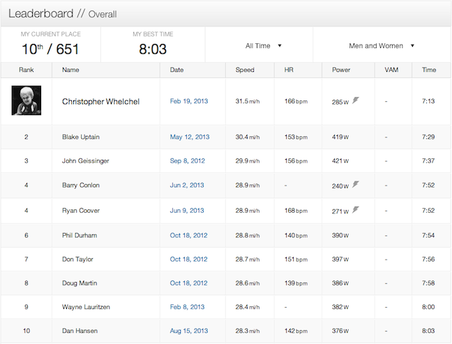
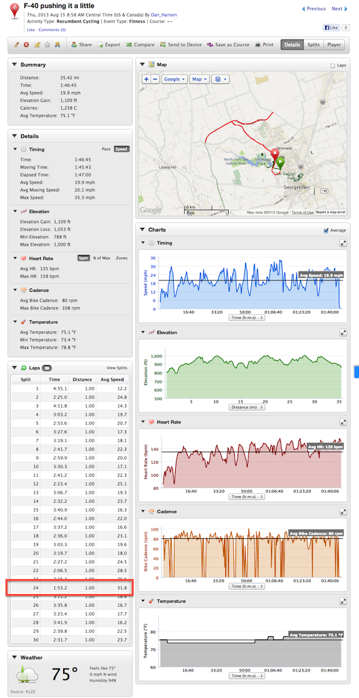

F-40 pushing it a little
15 Aug 2013
After a week of riding the F-40 I seem to be acclimating to the effect of wind on the bike.
I can now ride my normal training route on the roads and not worry about the bike itself.
On my normal training route there is a Strava KOM segment that is 3.8 miles. The KOM is done by a professional triathlete at 31.5 mph. Today I pushed it on this segment and got 10th place out of 651 going 28.3 mph.
I would like to get my normal training rides to always be in the 20 mph range.
I have my Garmin configured to split on every mile. This allows me to analyze my 40 mile training route and quickly find my slow areas. After several thousand miles on my Musashi I can count the number of split miles above 30 mph on one hand. Now, on every ride with the F-40 I usually get at least one split mile that is > 30 mph. Today, pushing it a little one of my splits was 31.8 mph - highlighted below on the Garmin snapshot.
http://connect.garmin.com/modern/activity/359336611
http://app.strava.com/activities/74905995#1487418987

